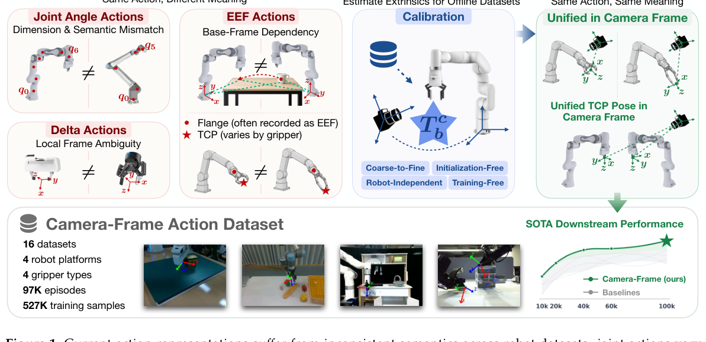
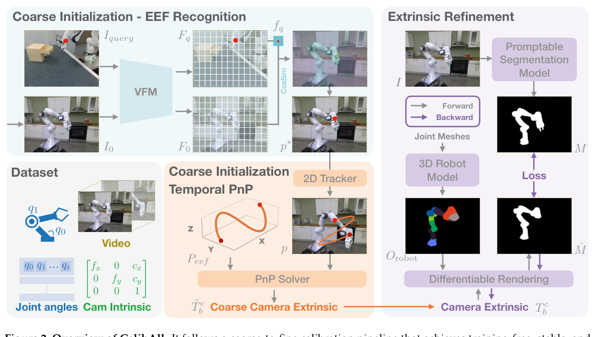
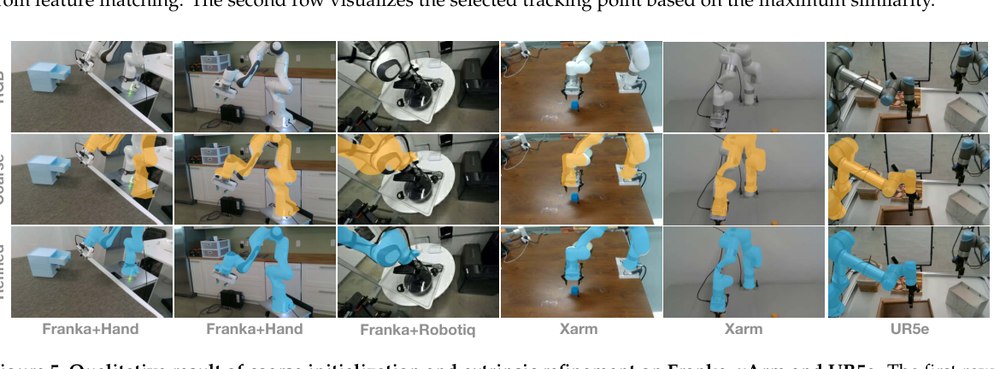

- 问题：joint action 维度/语义不同，EEF action 依赖 base frame 和 flange 定义，delta action 又有 local-frame convention 差异。
- 解法：CalibAll 只需 RGB 与 joint angles，先用跨图像特征找 EEF 点并做 temporal PnP，再用 robot mask 的可微渲染细化外参。
- 输出：把 flange 转成真实 grasp-relevant TCP，统一局部轴定义，再变换进 camera frame；单臂/双臂统一成 14D action。
- 结果：DREAM 上 AUC 97.642、ADD 0.008 m；RoboTwin 最佳 SR 48.0；ALOHA OOD 平均 SR 72.5。
- 可复现性：代码、MIT license、Docker、demo、Web UI 均公开；大规模标注数据集本身未见统一下载入口。

原文 caption
Figure 1: Current action representations suffer from inconsistent semantics... CalibAll resolves these inconsistencies by estimating camera extrinsics and converting heterogeneous actions into standardized TCP poses in the camera frame.
论文主张Camera frame 是比 robot base、joint space 或未规范化 delta 更适合跨本体共享的低层动作语义；真正阻碍它大规模应用的是旧数据没有外参。CalibAll 用 coarse-to-fine calibration 把这个缺口变成可离线补标的数据工程问题。
我的解读这是一篇很典型的 data process 论文：核心模型创新不大，价值在于把“坐标系、TCP、URDF、外参、单/双臂维度”这些常被当作脚注的细节做成一条可执行管线，并用 negative transfer 实验证明它们不是无关紧要的格式转换。
1. 问题与动机
不同机器人即使都输出 7 个数字，这 7 个数字也可能不具备相同物理含义。joint 1 在 Franka 和 UR5 上不是同一关节；base-frame EEF 坐标随底座摆放改变；flange 又不是夹爪真正接触物体的位置。
两个人都说“向北走一步”，一个人看指南针，一个人以自己面朝方向为北，另一个人记录的是肩膀而不是手指。统一成 7 个字段只统一了表格宽度，并没有统一动作。
论文的关键假设：相机坐标由视觉 observation 本身定义。同一画面中的空间位移投到 camera frame 后，比各自 base frame 更可能共享语义；双臂若被同一相机观察，其相对空间关系也隐含在这个共同 frame 中。
2. 相关工作与位置
传统 hand-eye calibration 多要求 marker 或现场机器人；EasyHeC 类 differentiable rendering 方法依赖好初始化；DREAM、CtRNet 等离线方案依赖特定机器人关键点或训练数据。跨本体 policy 则多用 action heads、prompt、latent action 规避低层语义不一致。CalibAll 的位置是：不再绕开 action semantics，而是用 robot-independent 的离线校准把旧数据改造成共享 camera-frame TCP action。
3. 方法总览
CalibAll 的输入只有 RGB video 与每帧 joint angles。预处理阶段取得/估计 intrinsics，选择 EEF 全程可见的视频片段。粗标定从一个参考 EEF 点出发，借 vision foundation features 在目标视频首帧定位，再跟踪成 2D trajectory；FK 同时把 joint angles 变成 3D EEF trajectory，PnP 由 2D-3D 对应求粗外参。细化阶段渲染全机器人 mask，与 segmentation mask 对齐并反向优化外参。

原文 caption
Figure 2: Overview of CalibAll. It follows a coarse-to-fine calibration pipeline... temporal PnP... followed by extrinsic refinement.
4. 符号表
| 符号 | 含义 | 维度/域 |
|---|---|---|
| $T^c_b$ | robot base $b$ 到 camera $c$ 的外参 | $SE(3)$ |
| $K$ | camera intrinsics | $\mathbb{R}^{3\times3}$ |
| $p,P_{eef}$ | 2D tracked trajectory 与 FK 得到的 3D EEF trajectory | $\mathbb{R}^{N\times2}$ / $\mathbb{R}^{N\times3}$ |
| $M,\hat M$ | observed segmentation mask 与 rendered mask | $\{0,1\}^{H\times W}$ |
| $T^b_{flange}$ | flange 在 base frame 的 pose | $SE(3)$ |
| $T^{flange}_{tcp}$ | URDF 给出的 flange-to-TCP transform | $SE(3)$ |
| $S_{tcp}$ | 统一 TCP local axes 的 gripper-specific transform | $SE(3)$ |
5. 方法详解
5.1 从一个点到 temporal PnP
- 是什么
- 用参考 EEF mark 的 feature $f_q$ 在首帧 feature map $F_0$ 中找最相似位置。
- 为什么
- 只标一个参考点，不需要为每种机器人训练专用 keypoint detector；后续 2D tracker 把点扩成时间轨迹。
- 边界
- “robot-independent”不等于无人干预：大规模标注中 tracking 或 mask 失败仍需人工选点/选 mask。
- 是什么
- 论文式 (2)：把多时刻 2D tracking point 与 FK 3D EEF point 当作一组 PnP correspondence。
- 直觉
- 单帧一个点不够求 6DoF；机器人运动提供了时间维度上的多组对应。
- 局限
- tracked mark 未必正好是 FK EEF origin，因此只求可靠初始化，不把它当最终外参。
5.2 可微渲染细化
- 是什么
- 逐 link 按 FK pose 渲染 mask，合并后与 promptable segmentation model 的 robot mask 做像素误差。
- 为什么 coarse 必须存在
- 若初始相机根本看不到 robot，rendered mask 全 0，梯度消失。DREAM 消融中 fine-only AUC=0；coarse+fine 才到 97.642。
- 收敛盆地
- 粗初始化平均 4.0°、5.5 cm；论文实验显示约 10°、7.5 cm 内 refinement 较可靠。
5.3 从 flange 到统一 TCP
- 是什么
- 论文式 (5)。base-to-camera 外参、FK flange pose、URDF TCP offset 与 local-axis standardization 连乘。
- 为什么
- 不同 gripper 的 flange 到指尖距离不同；若不转 TCP，同一个“到物体接触点”的动作仍有固定偏差。$S_{tcp}$ 再规定 z 轴向前、y 轴沿夹爪闭合方向。
- 双臂
- 每臂独立转换进同一 camera frame。每臂 7D（3 position + 3 rotation + 1 gripper），单臂补零到 14D，双臂直接拼接。
6. 走一遍例子
教学性简化：一台 UR5e 的日志只有 RGB、6 个 joint angles 和 flange pose。
- 轨迹：选一段夹爪始终可见的视频，tracker 得到 30 个 2D 点；URDF FK 得到同 30 帧的 3D EEF 点。
- 粗外参：PnP 求 $\tilde T^c_b$，例如误差约 4°、5 cm，已足以让 robot render 落在真 robot 附近。
- 细化：用 mask loss 优化到渲染轮廓与图像 robot mask 对齐。
- TCP：假设 flange 到闭合指尖有 0.12 m 固定 offset，把 flange pose 推到真实抓取点，并转成统一 y/z 轴。
- 训练 action：将 camera-frame 3D position、3D rotation、gripper 写入前 7D，后 7D 补 0；与 ALOHA 14D 双臂样本可进入同一 batch。
7. 实验
7.1 标定精度
| 方法 | AUC ↑ | ADD (m) ↓ | Train-free | Robot-independent |
|---|---|---|---|---|
| CtRNet-X | 86.231 | 0.014 | 否 | 否 |
| Coarse only | 82.050 | 0.071 | 是 | 是 |
| Fine only | 0 | 0.5+ | 是 | 是 |
| CalibAll | 97.642 | 0.008 | 是 | 是 |
来源：DREAM，论文 Table 1/2。DREAM-F/Q/H 表中 ADD 数值异常大但按原文保留；这里不用于 headline 比较。
7.2 action 对齐是否减少 negative transfer
| RoboTwin Clean | 10k | 40k | 100k | Best |
|---|---|---|---|---|
| From Scratch | 12.8 | 32.9 | 42.4 | 42.4 |
| Raw Mix | 19.4 | 37.7 | 36.1 | 37.7 |
| Prompt | 23.7 | 37.7 | 38.2 | 39.4 |
| Action Head | 19.1 | 28.5 | 33.0 | 36.8 |
| Camera Frame | 24.7 | 41.9 | 48.0 | 48.0 |
Raw Mix 在 100k 时低于 From Scratch（36.1 vs 42.4），直接展示“不对齐的数据会负迁移”。仅告诉模型 robot name 或加独立 head 也没有解决低层语义。
7.3 真实 ALOHA
| 方法 | ID 平均 | OOD 平均 | Overall |
|---|---|---|---|
| $\pi_{0.5}$ | 77.5 | 62.5 | 70.0 |
| From Scratch | 47.5 | 22.5 | 35.0 |
| Raw Mix | 62.5 | 40.0 | 51.3 |
| Camera Frame | 82.5 | 72.5 | 77.5 |
四任务，每个 ID/OOD setting 10 trials，来源 Table 7。Towel Folding 上 $\pi_{0.5}$ 更好，camera frame 并非每个任务都胜出。
8. 效果可视化

原文 caption
Figure 5: Qualitative result of coarse initialization and extrinsic refinement on Franka, xArm and UR5e.
9. 局限与讨论
- 作者承认：严重 self-occlusion 会使 tracking 失败，复杂背景/视角会使 segmentation mask 不准，大规模流程仍需 human-in-the-loop。
- DROID 压力测试：20 段中 point detection 20/20、track 15/20、refine 14/20；tracking 是主要瓶颈。成功样本平均 3.9°、4.4 cm。
- 固定相机假设：选定 clip 的外参被应用到整个 scene，要求 camera-base relative pose 固定；相机移动时需重新建模。
- 数据口径：摘要/正文称约 97K calibrated episodes，Sec.3.5 又称 527K frame-level samples，Appendix Table 5 合计 97,518 samples。报告保留原口径，不把三者强行等同。
- 算力：policy pretraining 200K steps 用 32 A100；下游 100K SFT 用 8 A100。这个成本不是 CalibAll 标注本身的成本。
- world model 关系：它不训练 world model，但输出 2D/3D TCP trajectory、mask、bbox 和统一 action，可显著改善 world model / VLA 的数据底座。
10. 常见疑问
为什么不用 robot base frame？
base frame 随机器人安装和数据集 convention 改变，而 camera frame 与模型看到的视觉 observation 共定义，画面相似运动更可能数值相近。
为什么还要 TCP standardization？
camera transform 只能统一全局参考系；若一个数据记录 flange、另一个记录指尖，局部 origin/axes 仍不一致。
“training-free”是否表示不用模型？
不是。它使用现成 VFM、tracker、segmentation foundation model 和 differentiable renderer；含义是无需为每种 robot 训练专用 calibration network。
单臂补零会不会产生假动作？
本文描述 14D padding，但没有像 Qwen-RobotManip 那样重点展开 per-dimension loss mask。工程实现应确认 inactive arm 的 loss/decoder 处理，避免把零当真监督。
11. 复现指南
- 仓库
- SII-dannyXSC/CalibAll，MIT。
- 环境
- README 指定 Python 3.12、PyTorch 2.9.0、CUDA 12.8；Docker 需 NVIDIA driver ≥570。
- 模型资产
- CoTracker、DINOv2、SAM3、MoGe；SAM3 约 6.5 GB。
- 格式
- 当前主要支持 LeRobot 2.1；Franka、UR5e、xArm7、ALOHA/ARX5。
git clone https://github.com/SII-dannyXSC/CalibAll.git
cd CalibAll
docker compose pull
docker compose up -d --no-build
# open http://127.0.0.1:8765镜像不含 checkpoints，需先按 README 下载到 ckpt/。
原生安装关键步骤
conda create -n caliball python=3.12 -y
conda activate caliball
pip install torch==2.9.0 torchvision==0.24.0 torchaudio==2.9.0 \
--index-url https://download.pytorch.org/whl/cu128
pip install -e .
pip install -r requirements.txt
python scripts/caliball_web.py --device cuda最小标注测试
hf download dannyXSC/Caliball_demo --repo-type dataset --local-dir data/demo
python scripts/label.py \
--config src/caliball/config/demo_aloha.yaml \
--format json --max_episodes 1 --skip_mask先核对 LeRobot meta/info.json 的 state keys/camera names；确认 $T^c_b$ 方向；检查 URDF mesh 和 TCP offset；先用 --skip_mask 验证几何，再开启完整 rasterization。完整 policy 训练按论文需 32/8 张 A100，不适合作为第一步。
12. 术语表
- Extrinsic
- 两个坐标系之间的刚体变换；这里主要是 robot base 到 camera。
- PnP
- Perspective-n-Point，由 3D 点及其 2D 投影估计 camera pose。
- TCP
- Tool Center Point，与实际抓取/接触位置一致的工具坐标原点。
- URDF
- 描述机器人 link、joint、mesh 和 kinematics 的文件格式。
- ADD / AUC
- 3D 点经预测/真值外参变换后的平均距离，以及阈值曲线下面积。
- Negative transfer
- 加入额外预训练数据后反而降低下游性能，常由监督语义冲突造成。